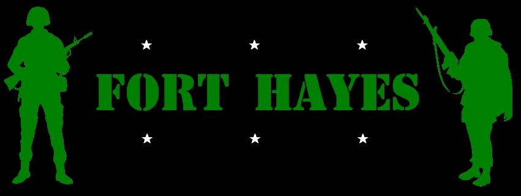
Fort Hayes is known today mostly as a local alternative high school for people with an interest in the arts, or for its big Columbus Public Schools bus depot, or as the site of a small Army Reserves post. What most people don't realize is that Fort Hayes was once a major military installation, one which has been around since the Civil War. Today more than a dozen massive military buildings deteriorate on its expansive Cleveland Avenue grounds.
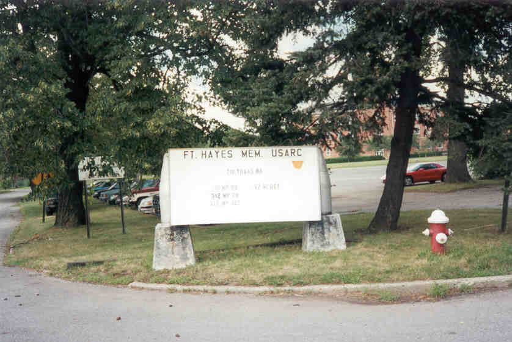
What can be said about such a cool place? Fort Hayes is the New York City of Columbus urban exploration; there's literally too much to see in one day. And the occupants of the Reserves post seem to have a really cool, laid back attitude about most of the buildings. Judging from the number of people I've talked to who have visited Fort Hayes' forgotten buildings, and the many signs of previous visitors, they must not bother people too often. I certainly wasn't, and I visited four times; once with Jesus, once with J., once with Rookie, and once by myself. I have to say that, in spite of getting stung by a wasp during one trip, I'd still recommend going.
The land for Fort Hayes was purchased from Robert Neil on February 17, 1863, when Columbus was still in its infancy. Neil was a member of the same Neil family from whom the land to build Ohio State was later purchased. The military base here was called The Columbus Barracks from 1905 through December of 1922, when it was named after Ohio governor and later president Rutherford B. Hayes.
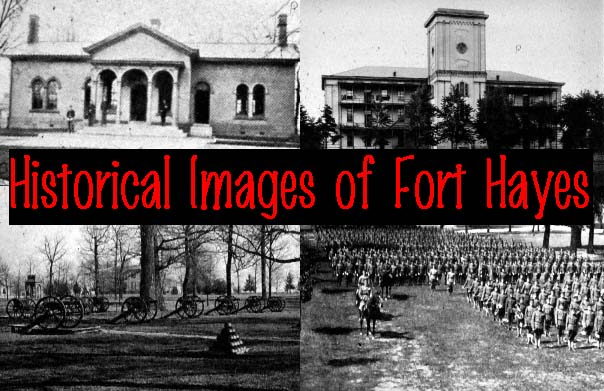
Click to view historic scenes from Fort Hayes
As I said there are more than a dozen abandoned buildings on the grounds of Fort Hayes; I seem to remember counting fourteen, and I'm probably short a few. Some I haven't been in yet because they were too hard; a few it was obvious they didn't want anybody in, since they store stuff in some of them. Even after exploring them I still wasn't sure what some of the buildings were, but I've made educated guesses and hope I'm at least close. A few of them I found old photos of. Please e-mail me if your or your dad or your grandpa was stationed at Fort Hayes, or if you have any information on what I have here.
Is Fort Hayes haunted? Lots of people believe so. Particularly active are the distinctive Shot Tower, used today for classes, the Drill Hall, and another classroom building between Company A and C. The ghost of a worried-looking soldier appears behind the Drill Hall, while a man who was killed by a cannon explosion during the ceremonial firing as Lincoln's body entered Columbus haunts the Shot Tower. A basement room in the other occupied building is said to be particularly creepy. Haunted or not, you can click below to explore any of the remaining Fort Hayes buildings.
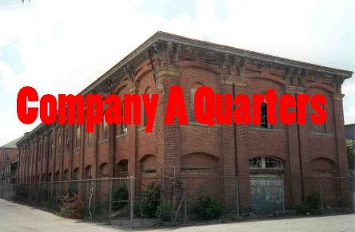
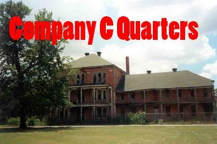
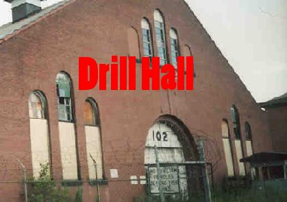
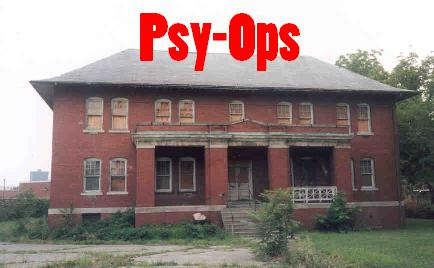
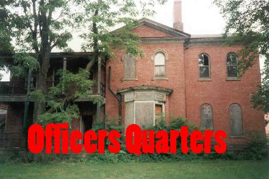
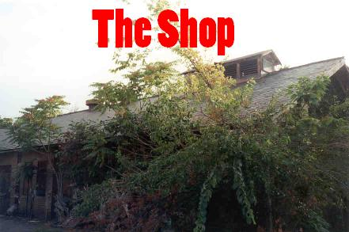
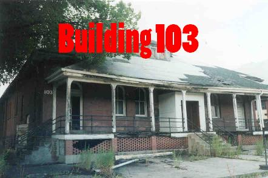
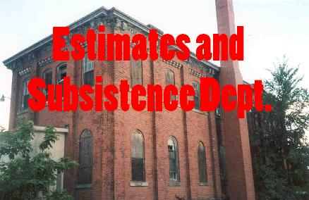
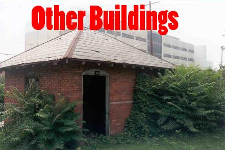
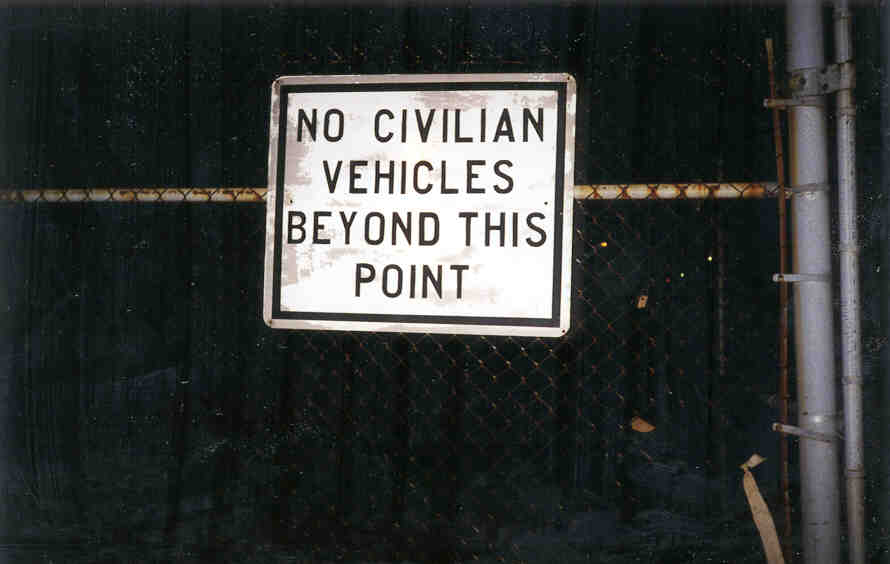
Back
forgottenohio@yahoo.com